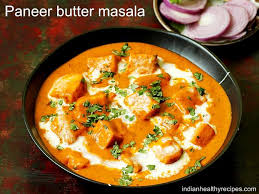

Ingredients:
- 200g paneer, cubed
- 2 tablespoons butter
- 1 cup tomato puree
- 1/2 cup cream
- 1 teaspoon garam masala
- 1 teaspoon red chili powder
- Salt to taste
- Fresh coriander leaves for garnish
Instructions:
- Heat butter in a pan and add tomato puree. Cook for 5-7 minutes.
- Add garam masala, red chili powder, and salt. Mix well.
- Add cream and stir until the sauce is smooth.
- Gently add the paneer cubes and simmer for 5 minutes.
- Garnish with fresh coriander leaves and serve hot with naan or rice.
Back to Recipe Index